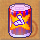

圖示產品名重量等級需求工作經驗需要原料特殊效力
千年大還丹
（毒性 5）5017036毒蘑菇 2 雪天果 2 養生酒 1
（調配技能）體質
暫時增加 55。
| 勇者的祕藥
（毒性 5）5018038山楂果 2 七彩八角 2 魔力特飲 1
（調配技能）力量與敏捷
暫時增加 55。
|  海洋的恩惠
（毒性 5）5019040薩特蘭草 2 龍鬚荳蔻 2 飄浮快感 1
（調配技能）力量與智慧
暫時增加 60。
|  女巫的精華
（毒性 5）5020042莉西達梅 2 天山蟠桃 2 女巫的藥酒 1
（調配技能）敏捷與幸運
暫時增加 65。
| 魔女的口糧
（飽度 8）5017036黑鮪魚 1 蜥蜴的尾巴 1 養生酒 1
（烹飪技能）智慧
暫時增加 50。
|  小強元氣飲料
（飽度 8）5018038巨螯蝦 1 蟑螂的腳 1 魔力特飲 1
（烹飪技能）幸運
暫時增加 50。
|  鴛鴦麻辣鍋
（飽度 8）5019040大章魚 1 蚊子的翅膀 1 飄浮快感 1
（烹飪技能）幸運與智慧
暫時增加 50。
|  巫婆四物飲
（飽度 8）5020042人面魚 1 蒼蠅的眼睛 1 女巫的藥酒 1
（烹飪技能）幸運與智慧
暫時增加 70。
| 養生酒5017036毒蘑菇 2 雪天果 2 葡萄酒 1
（釀酒技能）
魔力特飲5018038山楂果 2 七彩八角 2 陳年高粱 1
（釀酒技能）
 飄浮快感5019040薩特蘭草 2 龍鬚荳蔻 2 龍涎酒 1
（釀酒技能）
|  女巫的藥酒5020042莉西達梅 2 天山蟠桃 2 大補酒 1
（釀酒技能）
| 精靈綢緞5017036鳳緞 1 綠葉絲綢 1
（紡織技能）
王者絲布5018038鳳綢 1 龍魂絲綢 1
（紡織技能）
 戰神毛料5019040錦絹 1 神銀絲布 1
（紡織技能）
|  夢幻絨線5020042精靈綢緞 1 鳳緞 1
（紡織技能）
| 菲洛爾金屬10017077菲洛爾礦石 2 煤 5 金剛砂 5
（冶煉技能）
| 路加斯金屬 | | | | | | | | | | | | | | | | | | | | | | | | | | | | | | | | | | | | | | | | | | | | | | | | | | | | | | | | | | | | | | | | | | | | | | | | | | | | | | | | | | | | | | | | | | | | | | | | | | | | | | | | | | | | | | | | | | | |